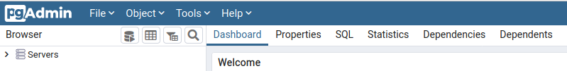
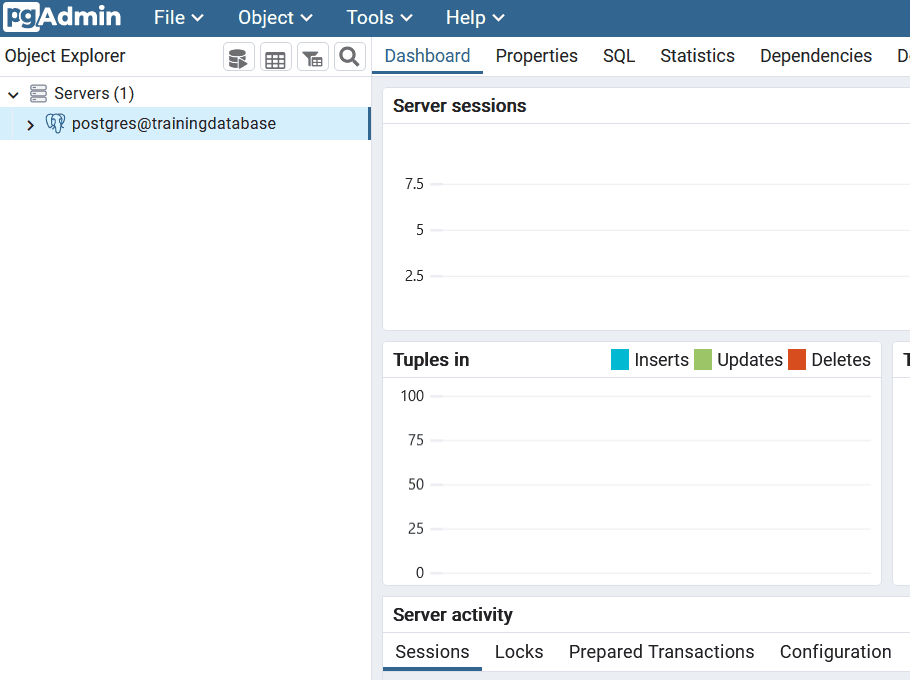
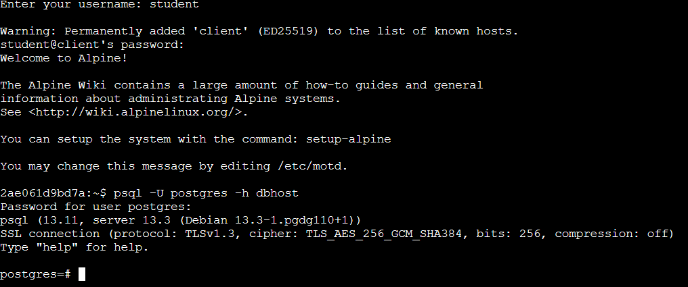
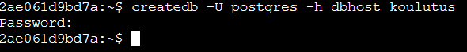

2 Exercise 1: Training environment
Contents – This exercise is an introduction to the pgAdmin 4 interface and psql. The exercise also covers how to create a new PostGIS database.
Goal – After the exercise the trainee understands the basics of using pgAdmin 4 and psql.
2.1 Exercise 1.1: pgAdmin 4
Start up pgAdmin 4 by following this link: /pgadmin. You can log into pgAdmin 4 which is hosted on a remote server with the following credentials:
TODO: päivitä ohjeet kirjautumiseen

pgAdmin- logging in
2.1.1 Registering a server connection
Connect the training environment’s database to pgAdmin by right clicking Servers and choosing Register > Server…. Enter the following information:
TODO: päivitä ohjeet kirjautumiseen
- In the General tab
- Name: Name of the connection (typically <username>@<database>)
- In the Connection tab
- Host: dbhost
- Port: 5432
- Maintenance database: postgres
- Choose Save password if you don’t want to rewrite your password when opening the connection
You can inspect the connected database in pgAdmin from the different tabs in the top panel:

PostGIS databases can also be used in other applications (with the psql commandline tool or with the QGIS DB Manager). The database looks like this in the QGIS database manager:

2.1.2 Creating the training database
Let’s create a database named trainingdatabase to be used throughout the exercises. This can be done through the pgAdmin Graphical User Interface (GUI):

Note! The database can also be created and deleted with the following SQL commands:
CREATE DATABASE trainingdatabase;
DROP DATABASE trainingdatabase;
2.1.3 Executing SQL queries
The majority of the exercises involve using SQL. You can execute the SQL queries and commands using pgAdmin’s Query Tool, which can be opened with the following instructions:
- Choose your database cluster from the Servers section
- Choose the database which was just created (trainingdatabase)
- From the top panel click Tools > Query Tool
You can write the SQL command in the window which opens up and then execute it by pressing the “play” button (Execute/Refresh) or by pressing F5. If you want to execute only a part of the query, you can select the part using your mouse and then press F5. The results of the query appear in the bottom panel. You may also save your SQL commands as .sql files from which they can be loaded later on.

Let’s add the PostGIS extension to trainingdatabase using the following command:
CREATE EXTENSION IF NOT EXISTS postgis;What is included in the spatial_ref_sys table?
What views were created in the database? What information do they contain?
A new table can be created by executing the following SQL command in the Query Tool
-- Introduction to PostGIS
CREATE TABLE test_tmp(
id serial,
time time,
num integer);Note that the lines which start with two dashes “--” are comments and do not affect the execution of the SQL command.
Tables can also be created based on SQL query results.
Let’s add rows to the table that was just created:
INSERT INTO test_tmp (time,num)
(SELECT now(), generate_series(1,5000));Rows, like tables, can be added based on SQL query results.
You can list (some of the) the rows you just created with the following query:
SELECT *
FROM test_tmp
LIMIT 10;You can delete the table with the following command:
DROP TABLE test_tmp;2.1.4 pg_dump ja pg_restore
There are separate command-line tools for creating and restoring backups: pg_dump and pg_restore. pgAdmin uses these internally.
2.2 Exercise 1.2: psql
In addition to pgAdmin (and QGIS Database Manager) you can also execute SQL command with the psql command-line tool. Open the command-line to start using psql. First log into the WeTTY terminal emulator:
TODO: päivitä ohjeet kirjautumiseen
Connect to your database cluster with the following command:
psql -U postgres -h dbhost
2.2.1 Using psql
Once psql has been opened you can write both psql and SQL commands on the command-line. Commands used during a psql session are called interactive:
A few examples of interactive psql commands:
\d = show tables, views and sequences
\dg = show database cluster roles (users)
\c database_name = connect to databaseUsing the help or especially \? commands you get information about the different commands psql has. You can exit the list by pressing q.
psql commands run on the command-line (not in a psql session) are called non-interactive. These are used especially when you want to run psql straight from the operating system’s command-line and the psql commands and SQL scripts are saved in a file. Non-interactive psql is especially well-suited for automating tasks. The commands mentioned previously are good examples of non-interactive psql commands. Try running the following command on the command-line:
psql -U postgres -h dbhost -c "select current_database();"2.2.2 Creating a database
Createdb is a command-line tool which makes creating a database easy. At its easiest you can create a database with the following command:
createdb -U postgres -h dbhost new_database
2.2.3 Dropping a database
Like createdb, dropdb is a command-line tool. You can drop (or delete) a database with the following command:
dropdb -U postgres -h dbhost database_to_be_deleted2.2.4 Closing the database connection
To close the connection to a database enter the following command in psql:
\q
2.2.5 Information about the PostgreSQL installation
You can query the PostgreSQL version:
SELECT version();You can check which extensions have been created:
SELECT *
FROM pg_extension;2.2.6 Closing the database connection
Right click the connection you’ve created and click Disconnect from server.
2.2.7 Other notes
If you want to be able to use the PostGIS database from another computer, you have to edit the PostgreSQL configuration file (pg_hba.conf):
# IPv4 local connections:
#host all all 127.0.0.1/32 md5
host all all 0.0.0.0/0 trustNOTE! This change allows connections from any computer and is a security risk in developmental database systems.
By default the connection to the database is unprotected. It is recommended to secure the database connection using TLS.